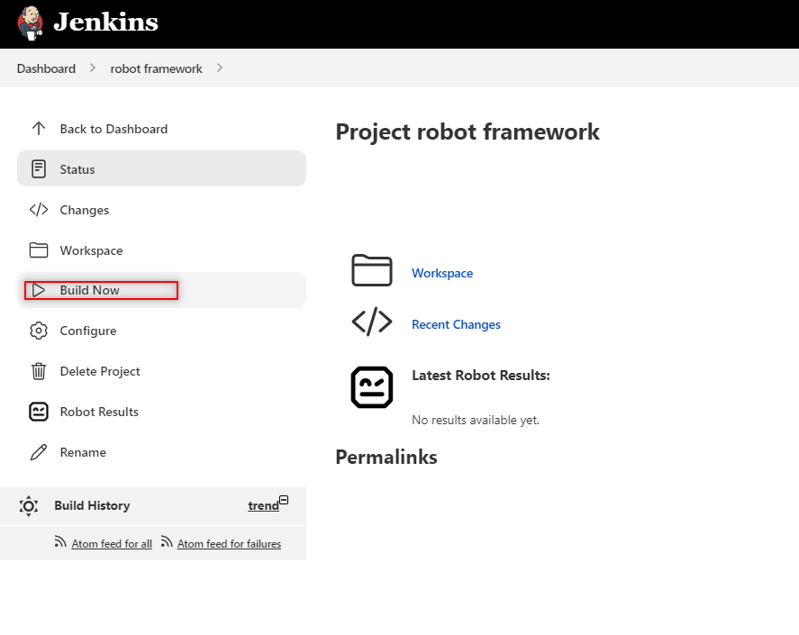

Jenkins
Initial setup¶

Download Jenkins¶
Jenkins can be downloaded on:
Jenkins is available for different OS, such as Windows, Mac, and Linux.
There are some hardware pre-requisites:
- 256MB of RAM.
- 1GB of free space ( although according to the documentation 10GB is recommended if one uses the docker container)
- Java
- Web browser (supported Browsers Chrome, Mozilla Firefox, Microsoft Edge, and Apple Safari)
Install Jenkins¶
On Windows, a .msi file will be downloaded which can facilitate the installation.

I can run the wizard to install it.
I need to select the logon type (in my case, the option Run service as LocalSystem is enough, but in a production
environment might be better be safe and select the next option)

The last step is to set the port where I will run Jenkins, by default will be 8080.

Make sure Java is already installed in the system¶
If everything is correct, I should be able to use the browser to navigate to the localhost
with the port selected, for example, http://127.0.0.1:8080 and we will find the Jerking welcome page.

If this is the first time using this instance of Jenkins, it will ask for a password stored in a specific location.
Customize Jenkins¶
Jenkins will provide a shortcut to get the plugin if this is the first time I am using this instance
Install suggested plugins

For now, I will choose to Install suggested plugins
Creating the administrator user¶
If this is the first time using the instance Jenkins will ask for the creation of an administrator account.
After creating the user, Jenkins will ask couple more questions for the setup, and then it is done.

Installation with .war file¶
If instead of downloading the installer, I decided to download the .war file I need to follow:
- Navigate to the location of the
.warfile - Execute the command
java -jar jenkins.war

- In this location, I use the command
This will open Jenkins in the default port 8080 however if I want to open it in a different location I can use
launching Jenkins from the console.
Adding the Robot Framework plugin¶
Jenkins allows adding a plugin that helps with the automation, in this case, I want to use Jenkins to run the Robot framework test, so I need to install the robot framework plugin
- Navigate to Manage Jenkins.

- Locate manage plugins.

- Switch to the Available tab and search for
robot framework.
- Check the box and later install without restart.

How to Create a job in Jenkins¶
To create a job I can start by:
- Navigating to a new item.

- Select the Freestyle project

- Once on the configuration page, I need to tell Jenkins to execute the test case,
I can do that using the built section and selecting
Executing Windows batch commandif I am running Jenkins in windows andExecute Shellif I am in Linux or MAC.

- In this space, I need to navigate to the folder where the
.robotfiles representing the test case are and run therobot command.
-
I need to tell Jenkins where to publish the Framework test results, for that I need to configure the Post-build Actions.
-
In the section post-built Actions, select
Publish Robot Framework test results

I can either provide the full path to the directory of Robot Output
Path to the result folder

or I can define a custom workspace and shorten the path.
Run the Robot Framework Job¶
Once the job is created and everything is configured I can run the job by clicking on build now

Troubleshooting¶
The Builds are shown as failed but if I inspect the result they say the test passed,

This is because I made a mistake during the configuration, I have the following
Step 4 is the build
but robot -d Result VideoSearch_Android.robot is not a valid command, and I can prove this by checking the test
console output
Console output
Here I can see what the console printed

So the test is passing, but due to my mistake of adding a not recognized internal command, Jenkins reported it as failed.
The solution¶
Remove the command robot -d Result VideoSearch_Android.robot from step 4.
Show HTML reports on Jenkins¶
Robot Framework will generate some reports but if I try to see it on Jenkins I will get some errors like this :

So I need to make some small changes
The problem¶
There is some issue with the Content Security Policy and by default Jenkins will block the HTML results generated by the Robot framework
Configuring Content Security Policy
The solution¶
Unset the header, for this, I can use the command
I need to go to the correct place to paste this command
- Navigate to the dashboard.
- Go to manage Jenkins.
- Look for the option Script console.
Script console
- Paste the command here

Script Console
Robot Results¶
Now to see the general result and some useful graphics I can go to robot results